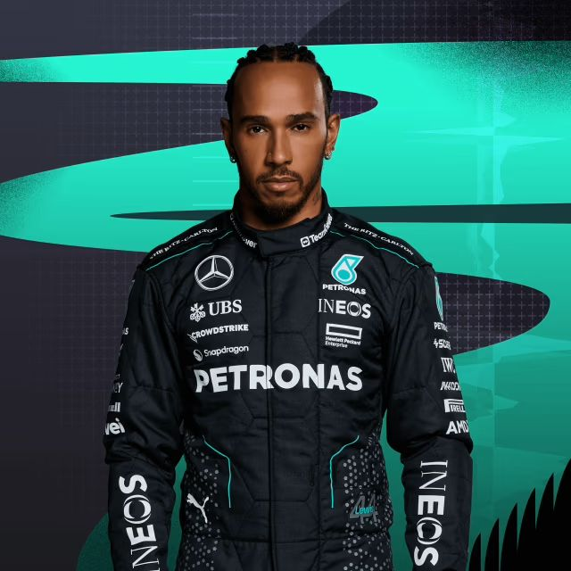

F1 Drivers 2024
Discover the Formula 1 Drivers - stables, podiums and points.
1
Max
Verstappen
🇳🇱
Max Verstappen, from the Netherlands, is one of Red Bull Racing's outstanding Formula 1 drivers. He has won three world championships, finished on the podium 100 times and amassed an impressive total of 2,637.5 points. Verstappen has shown remarkable talent, taking 56 wins from pole position.
2
Charles
Leclerc
🇲🇨
Charles Leclerc, from Monaco, is one of Ferrari's top Formula 1 drivers. With 128 Grands Prix entered, he has secured 32 podiums and accumulated a commendable total of 1,121 points. Leclerc's prowess on the track is clear to see, with 5 wins from pole position.
3
Sergio
Perez
🇲🇽
Sergio Perez, a native of Mexico, is a leading driver for Red Bull Racing in Formula 1. With an impressive career of 261 Grands Prix, he has finished on the podium 37 times and amassed a total of 1,532 points. Perez's remarkable talent is evident in his 6 wins from pole position.
4
Carlos
Sainz
🇪🇸
Spanish-born Carlos Sainz is a formidable force in Formula 1, currently wearing the iconic red of Ferrari. With an illustrious career spanning 187 Grands Prix, he has charted his way to success with 20 podium finishes, accumulating a total of 1,022.5 points. Sainz scored three wins from pole position.
5
Oscar
Piastri
🇦🇺
Proudly representing Australia, Oscar Piastri is emerging as a rising star in Formula 1, currently entrusted with the McLaren legacy. Piastri has gracefully completed 25 Grands Prix, scoring two podium finishes and collecting 125 points along the way. His journey is highlighted by a remarkable second place finish on the big stage.
6
Lando
Norris
🇬🇧
UK-born Lando Norris embodies the vibrant spirit of McLaren in Formula 1. Norris has won 107 Grands Prix. An impressive 14 podium finishes and a remarkable 660 points are testament to his prowess on the track. Among his achievements are seven second places, a testament to his ability to push the limits and fight for victory.
7
George
Russel
🇬🇧
Representing the United Kingdom, George Russell has established himself as a formidable Formula 1 contender in the colours of Mercedes. With an impressive career spanning 107 Grands Prix, Russell has finished on the podium 11 times, accumulating a total of 487 points. His career was marked by a remarkable race victory from the coveted pole position.
8
Fernando
Alonso
🇪🇸
Proudly representing Spain, Fernando Alonso is a Formula 1 titan who is currently lending his expertise to Aston Martin. With an impressive career spanning 383 Grands Prix, Alonso's name is synonymous with success, with 106 podium finishes and a remarkable total of 2283 points. His legacy is further cemented in history with 32 wins from pole position.
9
Lance
Stroll
🇨🇦
Lance Stroll adds a Canadian touch to the Formula 1 landscape as a member of Aston Martin. With an impressive career spanning 146 Grands Prix, Stroll has demonstrated his talent, scoring three podium finishes and accumulating a total of 277 points. His prowess on the track is underlined by three impressive third-place finishes in races.
10
Lewis
Hamilton
🇬🇧
From the United Kingdom, Lewis Hamilton is a legendary figure in Formula 1, leading Mercedes to numerous victories. With 197 podium finishes and a record seven World Championships, Hamilton's talent and dedication are unmatched.
11

Yuki
Tsunoda
🇯🇵
Japan-born, Yuki Tsunoda, is a rising star in Formula 1. He demonstrated his talent with the Red Bull Racing team. Tsunoda took part in 69 Grands Prix and collected 67 points. He finished the race in fourth place, underlining his potential on the track.
12
Nico
Hülkenberg
🇩🇪
Representing Germany, Nico Hülkenberg is a seasoned Formula 1 competitor, currently racing with the Haas F1 Team. Hülkenberg has competed in 209 Grands Prix, amassing an impressive total of 533 points. He has finished fourth on three occasions.
13
Kevin
Magnussen
🇩🇰
Kevin Magnussen, from Denmark, is a formidable presence in Formula 1, where he currently races for the Haas F1 Team. In 167 Grands Prix, Magnussen has amassed 187 points and has finished on the podium once. He finished the race in second place.
14
Alexander
Albon
🇹ðŸ‡
Thailand-born Alexander Albon brings a touch of dynamism to the Formula 1 grid as he races for Williams. With 84 Grands Prix to his name, Albon has twice finished on the podium and accumulated 228 points. His achievements include two memorable third places.
15
Zhou
Guanyu
🇨🇳
Zhou Guanyu, who proudly represents China, is adding a new dimension to the Formula 1 grid by racing with Kick Sauber. With 47 Grand Prix appearances to his name, Zhou has accumulated 12 points, demonstrating his potential on the track. In particular, he finished the race in eighth place, a testament to his skill and determination.
16
Daniel
Ricciardo
🇦🇺
Australian-born Daniel Ricciardo brings his trademark smile and formidable talent to the Formula 1 grid when he races with RB. With an impressive career spanning 242 Grands Prix, Ricciardo has finished on the podium 32 times and amassed a total of 1317 points. This includes eight race wins.
17
Esteban
Ocon
🇫🇷
Esteban Ocon, wearing the French flag, races alongside Alpine. With 136 Grands Prix to his name, Ocon has three podium finishes and an impressive 422 points, underlining his prowess on the track. This includes a memorable race win and third place on the grid.
18
Pierre
Gasly
🇫🇷
Pierre Gasly, a proud representative of France, races with Alpine on the Formula 1 circuit. With 133 Grands Prix to his name, Gasly has finished on the podium four times and accumulated a total of 394 points, demonstrating his talent. He won once and demonstrated his potential by finishing second on the grid.
19
Valtteri
Bottas
🇫🇮
Representing Finland, Valtteri Bottas is a formidable force in Formula 1 with the Kick Sauber team. With 225 Grands Prix to his name, Bottas has finished on the podium 67 times and accumulated 1,797 points. He has won ten races on the circuit.
20
Logan
Sargeant
🇺🇸
Logan Sargeant, representing the United States, joins Formula 1 with Williams, bringing an American touch to the international motor racing scene. With 24 Grand Prix appearances, Sargeant scored 1 point and finished the race in 10th place.